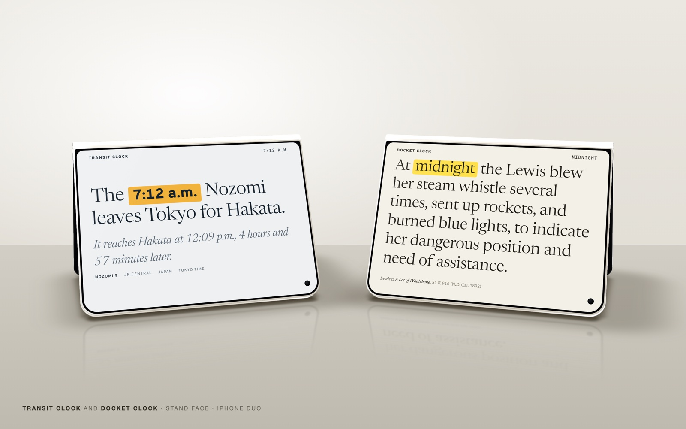
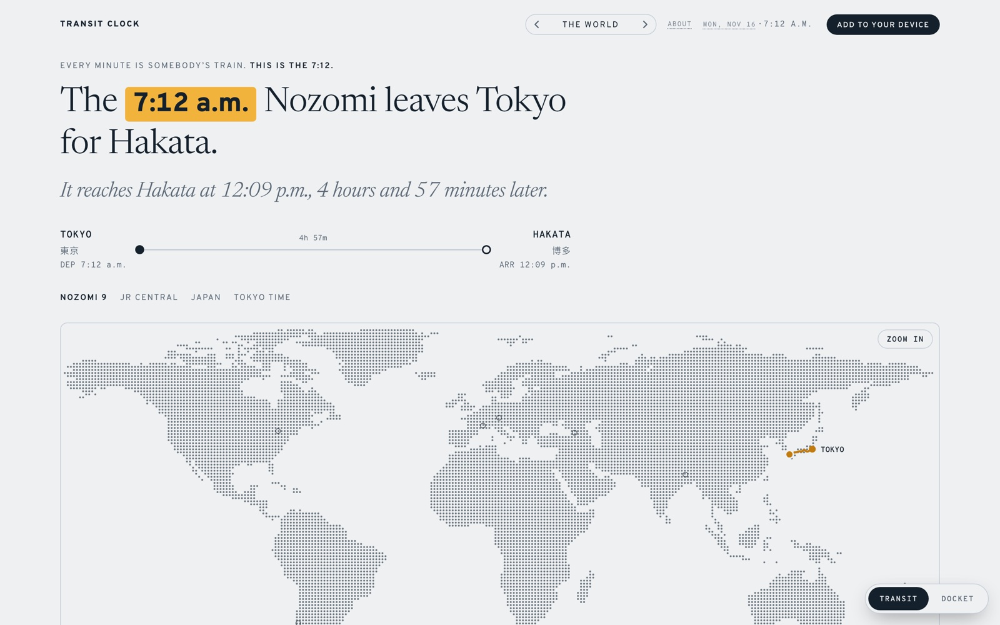
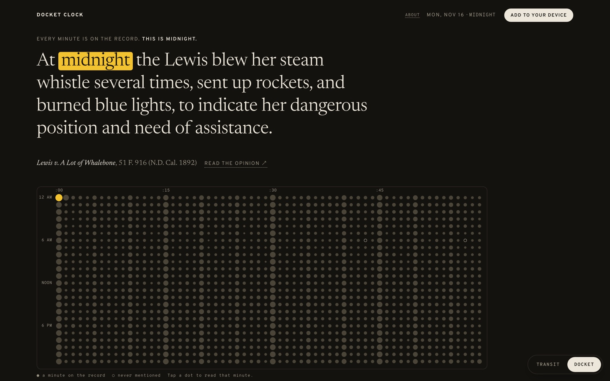

← All projects
Sentence Clocks
2026
Two clocks that tell the time in sentences. One uses train schedules, the other court cases.
The project opens on the Transit Clock. A switch in the corner of the page leads to the Docket Clock, whose code is in a repository of its own.





What they are
The Transit Clock shows a real train, ferry, or bus scheduled to leave at the current minute, somewhere in the world.
The Docket Clock shows a sentence from an American court case that mentions the current time.
What I did
- Gathered the data.Train schedules from about thirty transit networks, and 145,000 sentences that mention a time from Harvard’s collection of American court cases.
- Picked a sentence for every minute.Anything about violence, illness, or children was left out.
- Designed and published them.Each clock is one web page, hosted on GitHub Pages.
Credits
- Inspired by
- The Literature Clock by Johannes Enevoldsen
- Train schedules
- Published by each train, ferry, and bus company
- Court cases
- Harvard’s Caselaw Access Project